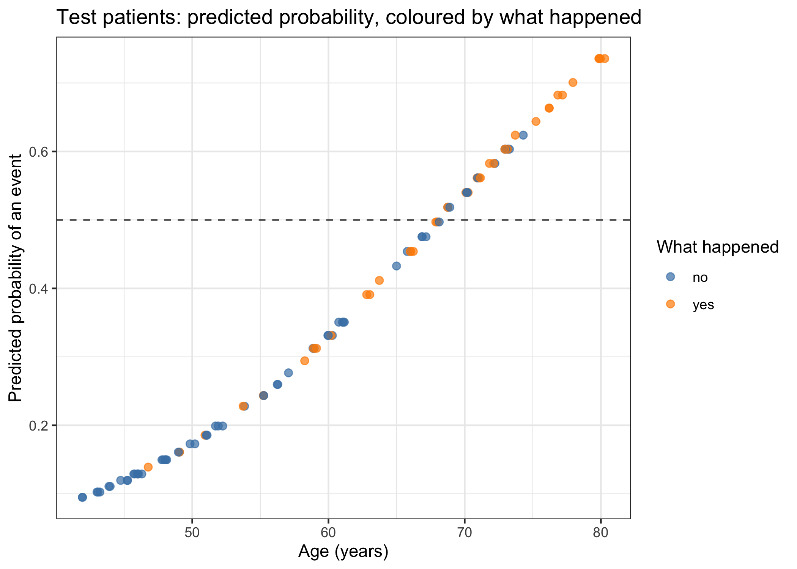
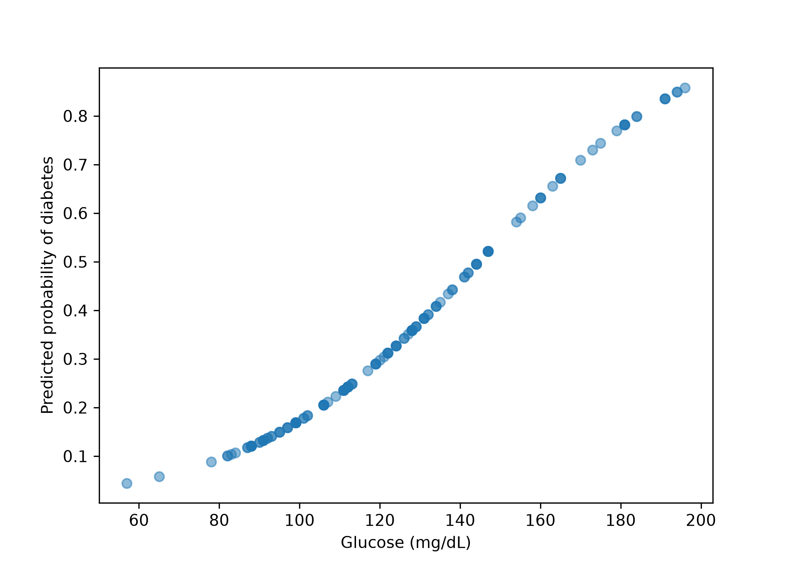

# Packages for this exercise. If one is missing, remove the # and run this line once:
# install.packages(c("tidyverse", "tidymodels", "glmnet", "rpart"))
library(tidyverse)
library(tidymodels)
theme_set(theme_bw()) # white background for every plotExercise 4.1 — Unified modelling frameworks in R and Python
In both R and Python there are many ways to fit a model:
- R:
lm(),glm(),rpart(),randomForest(),xgboost(), … - Python:
statsmodels, your own NumPy code, or one of the many classes in scikit-learn.
Each function or class tends to have its own syntax, its own argument names and its own way of returning a prediction. That becomes a problem as soon as we want to:
- swap one model for another,
- compare models fairly,
- build a whole pipeline of preprocessing, model and evaluation,
- tune a model without leaking information from the test data.
Two ecosystems solve this: tidymodels in R and scikit-learn in Python. Both put one consistent interface in front of the models, the preprocessing, the pipelines and the tuning.
| The question | tidymodels (R) | scikit-learn (Python) |
|---|---|---|
| what kind of model is this? | logistic_reg(), decision_tree() |
the estimator class, LogisticRegression |
| which code actually fits it? | set_engine("glm") |
the class, plus solver= |
| what happens to the data first? | a recipe() of step_*() |
transformers, e.g. StandardScaler |
| the two joined together | workflow() |
Pipeline |
| fit it, then use it | fit(), predict() |
.fit(), .predict() |
Theory: model specification and engine; the fit/predict interface; predicted probabilities; pipelines that carry their preprocessing with them.
Useful documentation: Getting started with tidymodels, the parsnip list of models, and the scikit-learn user guide.
NoteThe plots are for looking at
The code for every plot is folded away just above it, in case you are curious, and all of it is in the notebook linked at the top of each tab. You are not expected to write it yourself.
Download this exercise as an R Markdown notebook (.Rmd): the text and every code cell of the R version, including the code for the plots, with the blanks left for you to fill in. Open it in Positron or RStudio and run it a chunk at a time.
Packages
library(tidymodels) loads parsnip (the models), recipes (the preprocessing), workflows (the two joined together) and yardstick (the metrics), as well as the rsample functions you used on Day 1.
Part 1 — What model, and which engine
In tidymodels we separate two things:
- what kind of model we want: the specification;
- how it is fitted: the engine.
We declare the specification with one function per kind of model, and say whether it is for classification or regression:
log_spec <- logistic_reg(mode = "classification")
tree_spec <- decision_tree(mode = "classification")
rf_spec <- rand_forest(mode = "classification")
knn_spec <- nearest_neighbor(mode = "classification")
log_spec#> Logistic Regression Model Specification (classification)
#>
#> Computational engine: glmtree_spec#> Decision Tree Model Specification (classification)
#>
#> Computational engine: rpartThis does not fit anything yet. It only says “I want a logistic regression classifier”, “I want a decision tree for classification”, and so on. There is no data in it, and no coefficients.
The engine is the code that actually fits the model, and we choose it with set_engine(). Different engines are different algorithms for the same kind of model:
log_spec_glm <- logistic_reg(mode = "classification") |>
set_engine("glm") # base R glm() with family = binomial
log_spec_glmnet <- logistic_reg(mode = "classification") |>
set_engine("glmnet") # penalised (regularised) regression
tree_spec_rpart <- decision_tree(mode = "classification") |>
set_engine("rpart") # rpart, the classic tree algorithm
log_spec_glmnet#> Logistic Regression Model Specification (classification)
#>
#> Computational engine: glmnetWriting a specification with "glmnet" does not need the glmnet package installed. You would only need it the moment you fit the model.
ImportantLearning points
- A specification says what kind of model you want; it has not seen any data.
- The engine (in Python, the estimator and its
solver) is the code that fits it. - Every model is then used with the same two verbs: fit it, then predict with it.
Part 2 — Fit and predict a logistic regression
The data. data/diabetes_clean.csv holds 750 adults screened for type 2 diabetes: eight measurements from a single visit, and diabetes, which is pos or neg. It is the Day 2 file with the impossible readings of 0 already taken out, so it is ready to use. We keep glucose, BMI (mass), age and the outcome.
The split. We hold back every fifth person as the test set: 600 people to fit the models on, and 150 to test them. Splitting by a fixed rule rather than at random gives both languages exactly the same 150 people, so the R and the Python tabs print the same numbers. Every Day 4 exercise uses this split.
diabetes <- read_csv("data/diabetes_clean.csv") |>
select(glucose, mass, age, diabetes) |>
mutate(diabetes = factor(diabetes, levels = c("neg", "pos")))
test_rows <- seq(1, nrow(diabetes), by = 5) # every fifth person is held back
train <- diabetes[-test_rows, ]
test <- diabetes[test_rows, ]
count(train, diabetes)#> # A tibble: 2 × 2
#> diabetes n
#> <fct> <int>
#> 1 neg 380
#> 2 pos 220The outcome is a factor with two levels, neg then pos. A logistic regression fitted with glm predicts the probability of the second level, so writing the levels in this order means the model is about pos: having diabetes.
Now fit the model, predicting diabetes from glucose only, with fit() and a formula:
logistic_spec <- logistic_reg(mode = "classification") |>
set_engine("glm")
logistic_fit <- logistic_spec |>
fit(diabetes ~ glucose, data = train)
logistic_fit#> parsnip model object
#>
#>
#> Call: stats::glm(formula = diabetes ~ glucose, family = stats::binomial,
#> data = data)
#>
#> Coefficients:
#> (Intercept) glucose
#> -5.06399 0.03503
#>
#> Degrees of Freedom: 599 Total (i.e. Null); 598 Residual
#> Null Deviance: 788.6
#> Residual Deviance: 649.3 AIC: 653.3Inspect the coefficients with tidy(). They are on the log-odds scale, which Exercise 4.2 explains:
tidy(logistic_fit)#> # A tibble: 2 × 5
#> term estimate std.error statistic p.value
#> <chr> <dbl> <dbl> <dbl> <dbl>
#> 1 (Intercept) -5.06 0.448 -11.3 1.44e-29
#> 2 glucose 0.0350 0.00336 10.4 1.86e-25Predictions. Every parsnip model is used with the same predict(). type = "prob" gives one column of probabilities per class, named after the levels. Here it is for the test set, with the test data alongside:
test_preds <- predict(logistic_fit, new_data = test, type = "prob") |>
bind_cols(test)
head(test_preds)#> # A tibble: 6 × 6
#> .pred_neg .pred_pos glucose mass age diabetes
#> <dbl> <dbl> <dbl> <dbl> <dbl> <fct>
#> 1 0.150 0.850 194 28.5 28 neg
#> 2 0.724 0.276 117 30.1 58 pos
#> 3 0.688 0.312 122 57.3 24 neg
#> 4 0.764 0.236 111 26.8 25 neg
#> 5 0.523 0.477 142 39.5 62 pos
#> 6 0.816 0.184 102 28.9 22 neg.pred_pos is the predicted probability of diabetes, \(\hat{P}(\text{pos})\), and .pred_neg is \(\hat{P}(\text{neg}) = 1 - \hat{P}(\text{pos})\). Plot the predicted probability against glucose:
Code for this plot (optional)
ggplot(test_preds, aes(x = glucose, y = .pred_pos)) +
geom_point(alpha = 0.5) +
labs(x = "Glucose (mg/dL)", y = "Predicted probability of diabetes")
The points lie on an S-shaped curve: the higher the glucose, the higher the predicted probability, but never below 0 or above 1.
ImportantLearning points
- One interface: the same
fit()andpredict()work for every model in the framework. - A classifier can give a predicted probability for each class, not only a class.
- Check which class the probability is for: in R the second factor level, in Python the column of
classes_.
Part 3 — Pipelines: recipes and workflows
tidymodels also has tools for the steps before the model:
- a recipe holds the preprocessing: scaling, imputation, one-hot encoding and so on;
- a workflow joins a recipe and a model into one object.
Here the recipe standardises the three predictors, as on Day 2, and the workflow carries it together with the logistic regression:
log_recipe <- recipe(diabetes ~ glucose + mass + age, data = train) |>
step_normalize(all_numeric_predictors())
log_workflow <- workflow() |>
add_recipe(log_recipe) |>
add_model(logistic_spec)
log_workflow_fit <- fit(log_workflow, data = train)
log_workflow_fit#> ══ Workflow [trained] ══════════════════════════════════════════════════════════
#> Preprocessor: Recipe
#> Model: logistic_reg()
#>
#> ── Preprocessor ────────────────────────────────────────────────────────────────
#> 1 Recipe Step
#>
#> • step_normalize()
#>
#> ── Model ───────────────────────────────────────────────────────────────────────
#>
#> Call: stats::glm(formula = ..y ~ ., family = stats::binomial, data = data)
#>
#> Coefficients:
#> (Intercept) glucose mass age
#> -0.6983 1.0165 0.4643 0.3276
#>
#> Degrees of Freedom: 599 Total (i.e. Null); 596 Residual
#> Null Deviance: 788.6
#> Residual Deviance: 617.5 AIC: 625.5When you open log_workflow_fit in the Environment pane you will see that it holds the preprocessing as well as the model. That is the point: the standardisation was learned from the training rows, and predict() applies exactly the same standardisation to any new rows before the model sees them.
How often is the workflow right on the 150 test patients? predict() without type = "prob" gives the predicted class, using a cut-off of 0.5. Compare it with a “model” that always says neg, which is the most common class:
predict(log_workflow_fit, new_data = test) |>
bind_cols(test) |>
summarise(accuracy = mean(.pred_class == diabetes),
always_says_neg = mean(diabetes == "neg"))#> # A tibble: 1 × 2
#> accuracy always_says_neg
#> <dbl> <dbl>
#> 1 0.74 0.647The logistic regression is right for 74.0% of the test patients. Always saying neg is right for 64.7%, because 97 of the 150 do not have diabetes. Three clinical measurements add about nine percentage points over a rule that looks at nothing.
Swap the model, keep everything else. This is what the frameworks are for. Replace the logistic regression with a decision tree and change nothing else: the same recipe, the same rows, the same accuracy calculation.
# Replace every ______ below, then run this cell.
tree_spec <- decision_tree(mode = "classification") |>
set_engine("______")
tree_workflow_fit <- workflow() |>
add_recipe(log_recipe) |>
add_model(______) |>
fit(data = train)
predict(tree_workflow_fit, new_data = test) |>
bind_cols(test) |>
summarise(accuracy = mean(.pred_class == diabetes))
TipStuck?
The engine for trees in R is the recursive-partitioning package you used in Exercise 3.1. The model you add to the workflow is the specification on the line above.
Question! The two trees are given the same 600 people and the same three predictors, and the word “decision tree” is the same in both languages. Why do they disagree by more than ten percentage points?
The defaults differ. rpart stops growing the tree when a further split no longer pays for itself, and ends with 6 leaves. DecisionTreeClassifier keeps splitting until every leaf holds only one class, and ends with 171 leaves: it has learned the training patients almost one by one, and does worse on new ones. Same name, same data, different defaults, and the defaults are the whole difference. Always check what a model’s defaults are before you compare it with anything.
ImportantLearning points
- A recipe (R) or the steps of a Pipeline (Python) hold the preprocessing; a workflow or Pipeline joins it to the model.
- The preprocessing is learned from the training rows only and is reapplied, unchanged, to new rows.
- Swapping the model is one line; everything else stays the same, so the comparison is fair.
- Compare every model with a baseline that does no learning, such as always predicting the most common class.
Download this exercise as a Jupyter notebook (.ipynb): the text and every code cell of the Python version, including the code for the plots, with the blanks left for you to fill in. Open it in Jupyter, VS Code or Positron and run it a cell at a time.
Packages
Everything in this exercise comes from scikit-learn, imported one piece at a time as we need it.
# Packages for this exercise. If one is missing, install it once from a terminal
# (in a Jupyter notebook, type %pip instead of pip):
# pip install pandas numpy matplotlib scikit-learn
import pandas as pd
import numpy as np
import matplotlib.pyplot as pltPart 1 — What model, and which engine
In scikit-learn every model is a class, called an estimator, and every estimator is used in the same way:
model = SomeEstimator(settings)
model = model.fit(X_train, y_train)
predictions = model.predict(X_test)Creating the estimator declares the model. Here are four classifiers:
from sklearn.linear_model import LogisticRegression
from sklearn.tree import DecisionTreeClassifier
from sklearn.ensemble import RandomForestClassifier
from sklearn.neighbors import KNeighborsClassifier
log_spec = LogisticRegression()
tree_spec = DecisionTreeClassifier()
rf_spec = RandomForestClassifier()
knn_spec = KNeighborsClassifier()
print(log_spec)#> LogisticRegression()print(tree_spec)#> DecisionTreeClassifier()This does not fit anything yet. It only says “I want a logistic regression classifier”, “I want a decision tree”, and so on. There is no data in it, and no coefficients.
scikit-learn has no separate engine. The closest thing is the solver= argument, which picks the numerical method used to fit the model, the same idea as an engine in tidymodels:
log_spec_lbfgs = LogisticRegression(solver="lbfgs") # the default
log_spec_liblinear = LogisticRegression(solver="liblinear") # another algorithm
print(log_spec_liblinear)#> LogisticRegression(solver='liblinear')
ImportantLearning points
- A specification says what kind of model you want; it has not seen any data.
- The engine (in Python, the estimator and its
solver) is the code that fits it. - Every model is then used with the same two verbs: fit it, then predict with it.
Part 2 — Fit and predict a logistic regression
The data. data/diabetes_clean.csv holds 750 adults screened for type 2 diabetes: eight measurements from a single visit, and diabetes, which is pos or neg. It is the Day 2 file with the impossible readings of 0 already taken out, so it is ready to use. We keep glucose, BMI (mass), age and the outcome.
The split. We hold back every fifth person as the test set: 600 people to fit the models on, and 150 to test them. Splitting by a fixed rule rather than at random gives both languages exactly the same 150 people, so the R and the Python tabs print the same numbers. Every Day 4 exercise uses this split.
diabetes = pd.read_csv("data/diabetes_clean.csv")
diabetes = diabetes[["glucose", "mass", "age", "diabetes"]]
diabetes["diabetes"] = (diabetes["diabetes"] == "pos").astype(int) # 1 = pos, 0 = neg
is_test = diabetes.index % 5 == 0 # every fifth person is held back
train = diabetes[~is_test]
test = diabetes[is_test]
train["diabetes"].value_counts()#> diabetes
#> 0 380
#> 1 220
#> Name: count, dtype: int64scikit-learn wants the outcome as numbers, so pos became 1 and neg became 0. The model then predicts the probability of 1: having diabetes.
Now fit the model, predicting diabetes from glucose only. C=np.inf switches off a penalty that scikit-learn adds to logistic regression by default; without it the coefficients would not match the ones R reports.
X_train = train[["glucose"]] # two-dimensional: a data frame with one column
y_train = train["diabetes"] # one-dimensional: a single column
logistic_fit = LogisticRegression(C=np.inf)
logistic_fit = logistic_fit.fit(X_train, y_train)
print(logistic_fit.intercept_, logistic_fit.coef_)#> [-5.0639797] [[0.03502648]]These are the same two coefficients R reports. They are on the log-odds scale, which Exercise 4.2 explains.
Predictions. Every scikit-learn classifier has the same .predict_proba(). It returns one column per class, in the order of classes_:
print(logistic_fit.classes_) # column 0 is class 0 (neg), column 1 is class 1 (pos)#> [0 1]probs = logistic_fit.predict_proba(test[["glucose"]])
test_preds = test.copy()
test_preds["prob_neg"] = probs[:, 0]
test_preds["prob_pos"] = probs[:, 1]
test_preds.head()#> glucose mass age diabetes prob_neg prob_pos
#> 0 194 28.5 28 0 0.150439 0.849561
#> 5 117 30.1 58 1 0.724298 0.275702
#> 10 122 57.3 24 0 0.687992 0.312008
#> 15 111 26.8 25 0 0.764235 0.235765
#> 20 142 39.5 62 1 0.522539 0.477461prob_pos is the predicted probability of diabetes, \(\hat{P}(\text{pos})\), and prob_neg is \(\hat{P}(\text{neg}) = 1 - \hat{P}(\text{pos})\). Plot the predicted probability against glucose:
Code for this plot (optional)
fig, ax = plt.subplots()
ax.scatter(test_preds["glucose"], test_preds["prob_pos"], alpha=0.5)
ax.set_xlabel("Glucose (mg/dL)")
ax.set_ylabel("Predicted probability of diabetes")
plt.show()
The points lie on an S-shaped curve: the higher the glucose, the higher the predicted probability, but never below 0 or above 1.
ImportantLearning points
- One interface: the same
fit()andpredict()work for every model in the framework. - A classifier can give a predicted probability for each class, not only a class.
- Check which class the probability is for: in R the second factor level, in Python the column of
classes_.
Part 3 — Pipelines
scikit-learn chains the steps before the model and the model itself in a Pipeline. A preprocessing step, such as StandardScaler, is called a transformer.
Here the pipeline standardises the three predictors, as on Day 2, and then fits the logistic regression:
from sklearn.pipeline import Pipeline
from sklearn.preprocessing import StandardScaler
features = ["glucose", "mass", "age"]
log_pipe = Pipeline([
("scale", StandardScaler()), # preprocessing step
("model", LogisticRegression(C=np.inf)), # the model
])
log_pipe = log_pipe.fit(train[features], train["diabetes"])
print(log_pipe)#> Pipeline(steps=[('scale', StandardScaler()),
#> ('model', LogisticRegression(C=inf))])The pipeline holds the preprocessing as well as the model. That is the point: the standardisation was learned from the training rows, and .predict() applies exactly the same standardisation to any new rows before the model sees them.
How often is the pipeline right on the 150 test patients? .score() gives the accuracy, the proportion of correct predicted classes, using a cut-off of 0.5. Compare it with a “model” that always says neg (0), the most common class:
print("accuracy: ", round(log_pipe.score(test[features], test["diabetes"]), 3))#> accuracy: 0.74print("always says neg:", round((test["diabetes"] == 0).mean(), 3))#> always says neg: 0.647The logistic regression is right for 74.0% of the test patients. Always saying neg is right for 64.7%, because 97 of the 150 do not have diabetes. Three clinical measurements add about nine percentage points over a rule that looks at nothing.
Swap the model, keep everything else. This is what the frameworks are for. Replace the logistic regression with a decision tree and change nothing else: the same recipe, the same rows, the same accuracy calculation.
# Replace every ______ below, then run this cell.
from sklearn.tree import DecisionTreeClassifier
tree_pipe = Pipeline([
("scale", StandardScaler()),
("model", ______(random_state=1)),
])
tree_pipe = tree_pipe.fit(train[features], train["diabetes"])
print("accuracy:", round(tree_pipe.score(______, test["diabetes"]), 3))
TipStuck?
The estimator is the tree class you imported. The pipeline is scored on the test patients’ three predictors, exactly as the logistic regression was.
Question! The two trees are given the same 600 people and the same three predictors, and the word “decision tree” is the same in both languages. Why do they disagree by more than ten percentage points?
The defaults differ. rpart stops growing the tree when a further split no longer pays for itself, and ends with 6 leaves. DecisionTreeClassifier keeps splitting until every leaf holds only one class, and ends with 171 leaves: it has learned the training patients almost one by one, and does worse on new ones. Same name, same data, different defaults, and the defaults are the whole difference. Always check what a model’s defaults are before you compare it with anything.
ImportantLearning points
- A recipe (R) or the steps of a Pipeline (Python) hold the preprocessing; a workflow or Pipeline joins it to the model.
- The preprocessing is learned from the training rows only and is reapplied, unchanged, to new rows.
- Swapping the model is one line; everything else stays the same, so the comparison is fair.
- Compare every model with a baseline that does no learning, such as always predicting the most common class.
Stretch
NoteStretch — how much of the accuracy is the split?
Change the first row of the test set: hold back every fifth person starting from row 2, then from row 3, 4 and 5, and refit the logistic regression workflow each time. Write down the five accuracies. How far apart are they, and what does that say about quoting an accuracy from a single split of 150 people?